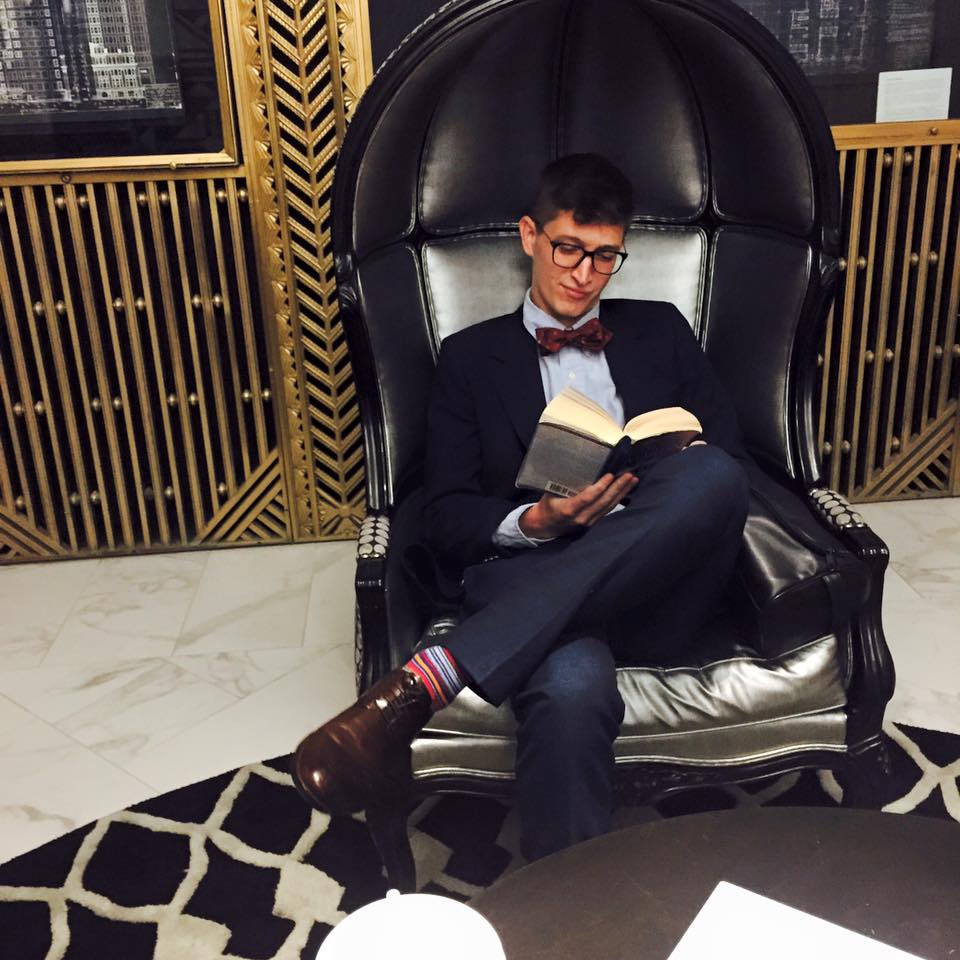

About Me
Hello World! My name is Ryan Osterman and I am an aspiring Full Stack Web Developer. I currently reside in Morrisville, NC and have been living in the RTP area since graduating from the University of North Carolina at Chapel Hill. I work for the UNC School of Medicine TEACCH Division and am responsible for creating and implementing individualized programs for adults diagnosed with Autism Spectrum Disorder (ASD), utilizing visual and physical structured teaching methods to promote meaning and independence in various work environments. Ultimately, I would like to create a website and/or web application capable of improving the lives of individuals with ASD. I am also a huge fan of all dogs, especially mine, Phoebe, spending time and traveling with my beautiful girlfriend, Katie, cheese, and of course learning new coding languages! I have experience with front-end development, utilizing HTML and CSS.